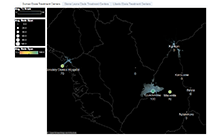
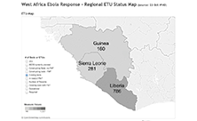
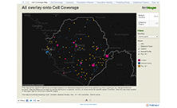

Information Saves Lives.
Crisis Infomatics focuses on enabling cross-national and cross-organizational information sharing to inform decision-making and provide quality common operational picture development. NetHope’s Ebola Response Program (NERP) is a comprehensive program aimed to improve the efficiency of the response to the devastating outbreak of Ebola in West Africa.
Learn moreVisualizations
West Africa: Known locations of Ebola Care Facilities, Ebola Cases, and ICT Requests
This map shows the location of known Ebola Treatment Units (ETUs), Community Care Centres (CCCs), and Laboratories (LABs). Facilities that have no known type are Unknowns (UNKs).
Guinea: Known locations of Ebola Care Facilities, Ebola Cases, and ICT Requests
This map shows the location of known Ebola Treatment Units (ETUs), Community Care Centres (CCCs), and Laboratories (LABs). Facilities that have no known type are Unknowns (UNKs).
Sierra Leone: Known locations of Ebola Care Facilities, Mobile Coverage, and ICT Requests
This map shows the location of known Ebola Treatment Units (ETUs), Community Care Centres (CCCs), and Laboratories (LABs). Facilities that have no known type are Unknowns (UNKs).
Sierra Leone: Known locations of Ebola Care Facilities, Ebola Cases, and ICT Requests
This map shows the location of known Ebola Treatment Units (ETUs), Community Care Centres (CCCs), and Laboratories (LABs). Facilities that have no known type are Unknowns (UNKs).
Liberia: Known locations of Ebola Care Facilities, Ebola Cases, and ICT Requests
This map shows the location of known Ebola Treatment Units (ETUs), Community Care Centres (CCCs), and Laboratories (LABs). Facilities that have no known type are Unknowns (UNKs).
Liberia: Known locations of Ebola Care Facilities, Mobile Coverage, and ICT Requests
This map shows the location of known Ebola Treatment Units (ETUs), Community Care Centres (CCCs), and Laboratories (LABs). Facilities that have no known type are Unknowns (UNKs).
NetHope Connectivity and Data Collection
These findings are a result of a NetHope connectivity and data collection survey from November and December of 2014.
Sierra Leone: Western Area Urban ICT Requests
This map shows the location of Information Communication Technology (ICT) connectivity requests in Sierra Leone in relation to Ebola Care Facility (ECF) locations and potential GSM (2G) mobile coverage.
Liberia: Known locations of Ebola Response Units and Mobile Coverage
This map shows the location of known Ebola Treatment Units (ETUs), Community Care Centres (CCCs), Laboratories (LABs), and Triage Centres (TRIs). Facilities that have no known type are Unknowns (UNKs).
Sierra Leone: Bombali ICT Requests
This map shows the location of Information Communication Technology (ICT) connectivity requests in Sierra Leone in relation to Ebola Care Facility (ECF) locations and potential GSM (2G) mobile coverage.
West Africa RFPs
This map shows the location of connectivity requests in Sierra Leone in relation to ETU locations and potential mobile coverage.
Liberia ICT Requests
This map shows the location of connectivity requests in Liberia in relation to ETU locations and potential mobile coverage.
Sierra Leone ICT Requests
This map shows the location of connectivity requests in Sierra Leone in relation to ETU locations and potential mobile coverage.
Guinea ICT Requests
This map shows the location of connectivity requests in Guinea in relation to ETU locations and potential mobile coverage
West Africa: Mobile Coverage 2G and 3G Service
TThis map shows the mobile coverage that has been submitted up to and including Dec 2013.
Interactive Assets
-

Ebola Treatment Centers with Service Areas
Information on Guinea Ebola Treatment Centers, Sierra Leone Ebola Treatment Centers and Liberia Ebola Treatment Centers.
-

ETU Status Map
West Africa Ebola Response - Regional ETU Status Map (source: 23 Oct WHO), ETU Charts and ETU-Map.
-

NetHope/Zen Masters Cell Coverage
This map shows detail of cell phone coverage based on a viewshed analysis. Filter by country or show marks for specific types of entities.
Resources
About
As the international community responds to the Ebola crisis in West Africa, the ability to rapidly access and distill large volumes of complex data and information is vital for effectively containing the epidemic and saving the lives of thousands of potential victims. Timely operational data is critical for basic logistics, contact tracing, tracking the number and location of new cases, allocating medical resources, and health care provision in emergency treatment units (ETUs).
“Information Saves Lives” is a commonly used mantra in emergency management circles. Better informed, responders can coordinate their efforts more effectively and communities can build resilient systems to protect themselves from hazards and take steps to mitigate the effect of the next humanitarian crisis.
NetHope is partnering with Dr. Jennifer Chan , a leading expert in the field of crisis informatics, to work with the various aid and government agencies. The goal is to bring multiple datasets together - from multiple sources and in varied formats - as the crisis evolves in a comprehensive but time-sensitive way.
These efforts focus on advancing NetHope’s Emergency Response Program’s mission to improve the data and information sharing for a more efficient and effective West Africa Ebola response. Leveraging the time and expertise of “digital humanitarians” (also known as Volunteer and Technical Communities (VTCs) and a cohort of highly skilled NetHope staff and consultants, NetHope is working with a multitude of Ebola related datasets and transforming them into visual formats for the use by operational organizations.
To address this, the NERP is compromised of three key components:
-
Common Operational Picture Development (COPD)
Enabling more effective response to the Ebola outbreak through radically increased emphasis on enabling cross-national and cross-organizational information sharing
-
Cross-sector Partnership Development
Bringing together all of the actors (government, civil society, and military) involved in the response, both at the national levels and at the international level
-
Technical Infrastructure Development (TID)
Improving the underlying technical infrastructure of response organizations (both national and international) to better share and make use of available information